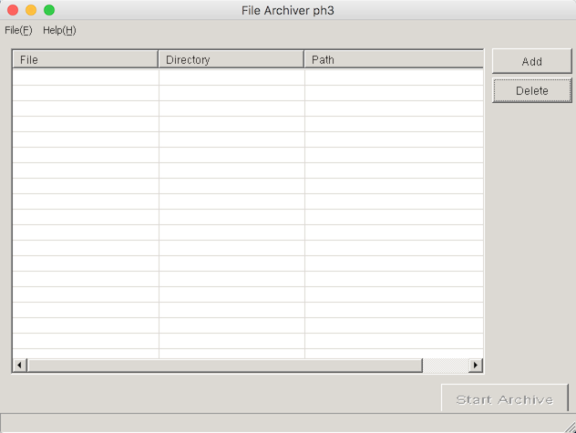
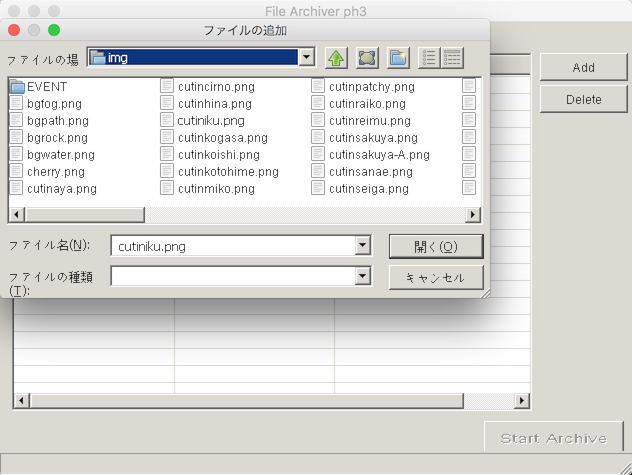
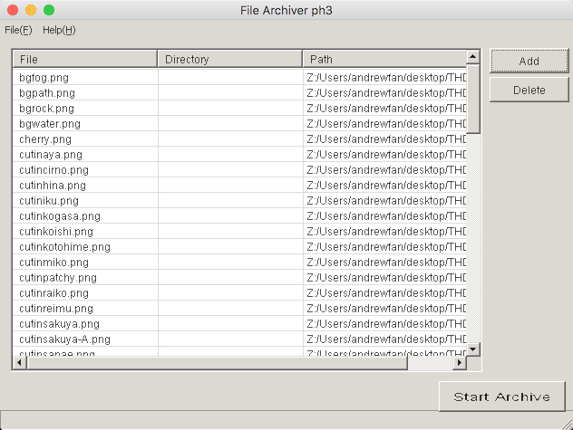
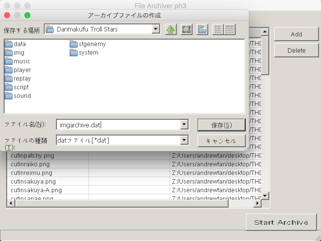
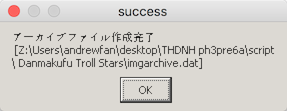
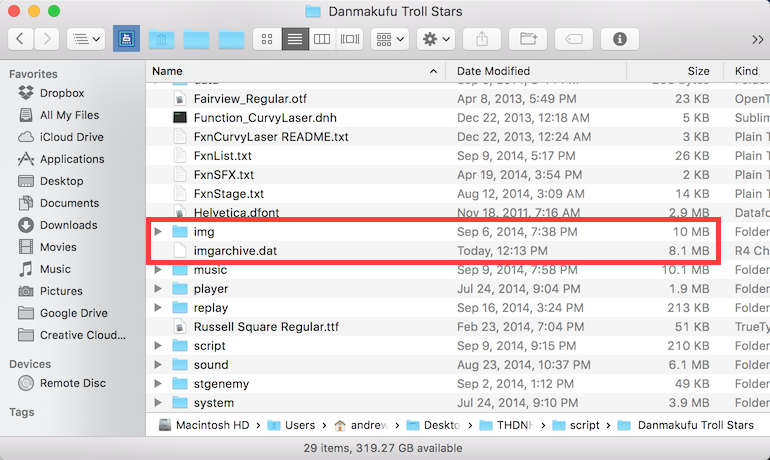

Sparen's Danmakufu ph3 Tutorials Extra Lesson 3 - Asset and Code Protection
The Western Touhou Community is a community full of wonderful people who love ZUN's creations, and the scripter/programmer subset is a community of people who love what they do and respect other people's work. Around the world, Touhou has gathered a large following of fans and content creators. However, the fact remains that most of us do in fact pirate the official Touhou games and spinoffs.
In the Danmakufu community, we tend to use ZUN's original assets (graphics and sound resources, etc.) and things we pull off of Google Images with complete and absolute disregard for citation and licensing. For the most part, this is overlooked - the majority of any creative danmaku work is on the coding side - creating the patterns, etc. The music and graphics are usually just to supplement the actual script.
However, when we enter the realm of code and asset theft within the community, the gray area of what is acceptable and not acceptable in regards to usage of external resources ceases to exist. We suddenly have projects with little or no originality or creativity - works that have no value and have only a detrimental impact on the content creators from whom the code and assets were stolen.
In this guide, which is aimed at intermediate and advanced level scripters and game designers using Danmakufu, I will explain some methods for preventing Code and Asset theft.
Table of Contents
Control over Distribution
To begin, let's go over distribution. There a number of channels for distribution of a Danmakufu Project. Bulletforge, Mediafire, and Dropbox are very common resources. However, each of these sources has its own pros and cons in terms of how well you the scripter can communicate with the player and other people who may download your work. Note that the site you use to host your work has little impact on code and asset visibility but does have an impact on how effectively you can get the latest version of your project to your target audience.
Bulletforge is the primary hosting site for Danmakufu Projects. It has changed over the years - versions and comments were dropped, and there was a short-lived report button that was abused to the point where Blargel just got rid of it. As of writing (Jan 25, 2016), there are no longer methods for the community to point out that a project is plagiarized. You can no longer report a script for copyright infringement or post comments warning potential downloaders. Of course, the reason is financial - Blargel is paying for all of our hosting with his own budget.
Anyways, Bulletforge is still a great place to upload your work - you can have videos, images, and a description box for whatever you may want to say about your project. Now, it's not like people read these boxes, but I still highly recommend citing libraries, and unoriginal assets you have used in the description box. If you have original code and/or assets and wish to protect them, it is recommended that you explicitly prohibit their use (without permission/entirely) with a few words in the description. It may seem utterly ineffective, but it will prompt some scripters to ask for permission first.
Hosting sites such as Mega and Mediafire are the second most common places to store scripts. These links are not public like Bulletforge but are managed by the content creator. However, you are completely dependent on a README within your script for any form of communication with the player. Additionally, it may be a pain to have to reupload versions from scratch when you have a new version of your script, especially when other people link to a specific version of your work.
Closed Source Collaboration and Version Control services like DropBox are less commonly used than the large hosting sites, and tend to be better for controlling who can access the project. Once again, you are dependent on a README, but updating projects is much easier. DropBox has a number of problems when working in a group, however - conflicted copies are a PITA and there are other issues with syncing.
Distributed Version Control services like Github and Bitbucket are the least-used places to store projects, as they are almost always used for full games with development teams. Github is Open Source, with Closed Source being a little more of a financial pain. Bitbucket allows for free Private repositories but lacks most of the features of Github (including but not limited to Bitbucket's crappy issue tracker and the bland and tasteless UI). In these cases, you have full control of how and when versions are distributed to people. If you go Open Source, you probably shouldn't be reading this guide at all since your assets and code are even more public than if you just released the script. If you go Closed Source, you control your releases, control your README, and have access to the version control and bug trackers, etc. The big downside to Distributed Version Control is that you need to understand (to an extent) how they work, which is enough of a learning curve to shut off most scripters.
Some scripters choose to release their work through personal blogs and websites. Here you have absolute flexibility in distribution and the like, but you have the same limitations and flaws as any other hosting site.
Asset Protection
Now that we've gone over where to host your project releases and some of the potential benefits, let's go over how to protect your assets.
The best resource you have is the built-in Danmakufu Archiver, which comes in the tools directory of every copy of ph3. This tool will package anything and everything into a single file that can be read by Danmakufu (but is hard to decrypt). It has overwhelming benefits - nobody can access anything in the archived file without taking ugly workarounds such as writing an external Danmakufu script to fetch the contents of the archive during runtime or using Audacity to record your music. At the end of this guide (Part 4), there is a step-by-step guide on using the archiver.
Now, it's still possible to rip graphical assets out of Danmakufu (without the alpha channel) at runtime as long as the file paths are known. In this case, you best bet is to also archive most of your code or depend on masks, blends, and shaders to obtain your desired results.
As for sound and sound effects, they can be recorded via Audacity, so I suggest pausing music during pause menus and similar things (such as having plenty of sound effects in-game) so that it becomes difficult or near-impossible to record a good-quality copy of the original. Sound effects are, generally speaking, nearly impossible to record properly - the slightest bit of bgm will destroy those attempts.
Code Structure and Protection
Now we have arrived at the biggest problem in our community - code theft.
Whether it's New Magician, where several fangames had their code resources haphazardly dumped into a partially-functional game that was only good for its dialogue, or Kokoro Love Paprika, which was actually one of Kirbio's scripts with dialogue and shotsheet changed, instances of code theft tend to happen with varying results.
Now, I'm not saying that your code should be completely unintelligible - the more unintelligible, the more likely it will be copied verbatim, while the more intelligible, the more likely it will be adapted for a new and perhaps original purpose. It is also a bad idea to have a mess of includes, notify events, or common data. While it will never work if someone tries to steal it, you run the very very possible risk of returning to it in two months and having absolutely no idea what your code does or how it works at all. Debugging becomes an actual nightmare.
Licensing or clearly stating in a README whether or not your code can be copied, altered, and/or reproduced is highly recommended, even knowing that nobody will bother reading it. If there is none of this in a released script, you as creator have significantly less control over what happens if/when someone takes and reuses your code. We learn from each other and we tend to ask permission, but language barriers and ignorance of code theft (especially in the case of danmaku patterns) will always happen.
Archiving using the Danmakufu archiver is a powerful way to protect your publicly released code. However, besides the need to keep your own backup, it is technically possible to pull code from the archive (though incredibly difficult and time-consuming).
Obfuscation is another way to protect your code. Tools such as my Danmakufu Obfuscator provide ways to make your code illegible to most people. My tool has documentation removal and white space removal functionalities only - changing names of variables and functions is not feasible due to Danmakufu's include system. Note that my program has bugs and that Danmakufu's execution of GetCurrentScriptDirectory() may change if you remove whitespace. I advise against using my tool for anything other than removal of comments.
Overall, what you do is up to you, but I hope that you have a better understanding of how you can protect your code and assets.
Using FileArchiver.exe
FileArchiver.exe is located in the tools/ directory of your copy of Danmakufu ph3. For the purposes of explaining, we will assume the following type of file structure, with a folder specifically for images:
--ScriptName/ |--img/ | |--sprite.png | |--cutin.png | |--otherimage.png |--lib/ |--script/ |--sound/ |--system/
We will be compressing the contents of img/ using FileArchiver.exe. First, open the program. The UI is as follows:
The main box with File, Directory, and Path shows all the files to be placed in the archive.
If you hit 'Add', you'll be able to navigate to the directory containing the files to add. Simply select all of the files that you want to be in the archive, and click 開く (Open) to add the files to the list of files to archive. キャンセル can be used to cancel. ファイル名 (Name) states the name of the file, and ファイルの種類 specifies the type of file (.png, etc).
Once you've hit 開く, you get the following:
Now you can choose to remove files from this list if you choose, or do something else. Or you can hit Start Archive to create the archive. It will prompt you for a location to put your archive as well as a name for your .dat. In this case, we want our archive to be in the same directory as img/.
Once the archiving has finished, you will get a success message.
At this point, the archive has been made. You can view it in the destination directory.
Note that the archive has actually compressed the files inside - in this case, 1.9 MB have been shaved off of the file size.
Now, some things about archives - firstly, everything archived is case sensitive. If you referred to a file called Sprite_seiran.png as sprite_seiran.png, it will no longer work in the archive. The filepaths in the .dat archive are case sensitive. Secondly, we are placing the archive one directory ABOVE where the images used to be - in this case, in the same folder as img/. This is because when you archive files, the filepath is saved - assuming you archived all of the contents of img/ in imgarchive.dat, you are free to remove the img/ directory entirely, and all of your filepaths using img/ will still work!
Additionally, note that the file archiver preserves the original files. If you don't remove the originals, Danmakufu will read from the original files even if you add the archive. So you should actually remove img/ from the script entirely (and keep it somewhere safe as a backup - always keep the originals as a backup).
As for loading archives, please be advised that you can only load an archive once. So if you're doing a package, load it in the package. Otherwise, load it in your system script (recommended that you do it as the first line of @Initialize). The function is as follows:
AddArchiveFile(GetCurrentScriptDirectory() ~ "../imgarchive.dat"); //In system script located in system/And that's basically it. Thanks for reading!